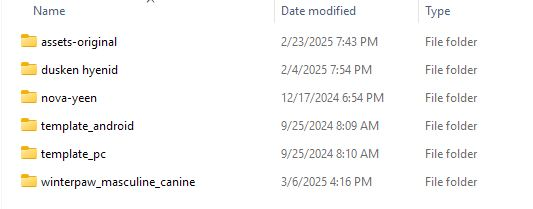

Templates allow me to preserve different utilities and tools in each project that I will be using across them.
I created two projects in the VRChat Creator Companion and named them template_android/pc. I also like to have a project for each avatar base. When I want to add a new project, I create a new folder for the avatar, duplicate the entire template, place it in the new folder, then rename the duplicated template. This preserves all my packages - such as shaders, tools, and even the SDK login - from the template, and I do not have to re-import.
If you want to try this yourself, remember to access the copied project from the Companion by using the "Add Existing Project" option instead of "New Project," and select the previously renamed folder. Make sure to open it and inspect it to make sure everything went smoothly.
